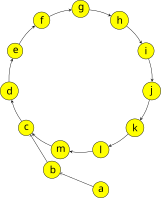

OI Wiki · prijevod · MatematikaOI Wiki · translation · Mathematics
Mali Fermatov teorem & Eulerov teoremFermat's little theorem & Euler's theorem
Sadržaj
U ovom se članku razmatraju mali Fermatov teorem, Eulerov teorem i njegovo proširenje. Ti teoremi rješavaju problem računanja potencija s proizvoljno velikim eksponentom po proizvoljnom modulu.
Mali Fermatov teorem
Mali Fermatov teorem (Fermat's little theorem) jedan je od najosnovnijih teorema teorije brojeva. On je ujedno i teorijska podloga Fermatova testa prostosti.
Mali Fermatov teorem
Neka je \(p\) prost broj. Za svaki cijeli broj \(a\) takav da \(p\nmid a\) vrijedi \(a^{p-1}\equiv 1\pmod p\).
Teorem
Neka je \(p\) prost broj. Za svaki cijeli broj \(a\) vrijedi \(a^{p}\equiv a\pmod p\).
Ove su dvije kongruencije ekvivalentne kad \(p\nmid a\); a kad \(p\mid a\), kongruencija \(a^p\equiv 0\equiv a\pmod p\) vrijedi trivijalno. Stoga su ove dvije tvrdnje ekvivalentne. Obje se tvrdnje često nazivaju malim Fermatovim teoremom.
Prvi dokaz
Neka je \(p\) prost broj i \(p\nmid a\). Najprije dokazujemo: za \(i=1,2,\cdots,p-1\) ostatci \(ia \bmod p\) međusobno su različiti. Dokaz provodimo kontradikcijom. Kad bi postojali \(1\le i < j < p\) takvi da
No ni \((j-i)\) ni \(a\) nisu višekratnici od \(p\), što je očita kontradikcija.
Drugim riječima, ti ostatci čine permutaciju skupa \(\{1,2,\cdots,p-1\}\). Stoga vrijedi
To znači
Dakle, lijeva je strana jednakosti višekratnik od \(p\), ali nijedan od \(i=1,2,\cdots, p-1\) nije višekratnik od \(p\), pa mora biti \(p\mid (a^{p-1}-1)\), odnosno vrijedi mali Fermatov teorem.
Drugi dokaz
Uočimo da druga formulacija malog Fermatova teorema vrijedi za sve \(a\in\mathbf N\), pa možemo razmotriti matematičku indukciju. Slučaj negativnih cijelih brojeva lako se svodi na slučaj nenegativnih.
Baza indukcije je \(0^p\equiv 0\pmod p\), što očito vrijedi. Pretpostavimo da tvrdnja vrijedi za \(a\in\mathbf N\); treba dokazati da vrijedi i za \(a+1\). Prema binomnom teoremu
Osim prvog i posljednjeg člana, u izrazu za binomni koeficijent \(\dbinom{p}{k} = \dfrac{p!}{k!(p-k)!}\) broj \(p\) dijeli brojnik, a ne dijeli nazivnik, pa su ti koeficijenti za \(k\neq 0,p\) višekratnici od \(p\). Stoga vrijedi
Pritom je u drugom koraku primijenjena pretpostavka indukcije. Dakle, po matematičkoj indukciji mali Fermatov teorem vrijedi.
Obrat malog Fermatova teorema ne vrijedi. Čak i ako za sve \(a\) relativno proste s \(n\) vrijedi \(a^{n-1}\equiv 1\pmod n\), \(n\) ne mora biti prost. Više o tome u odjeljku Fermatov test prostosti.
Eulerov teorem
Eulerov teorem (Euler's theorem) poopćuje mali Fermatov teorem na slučaj općeg modula, ali i dalje zahtijeva da baza i modul budu relativno prosti.
Eulerov teorem
Za cijeli broj \(m>0\) i cijeli broj \(a\) takve da je \(\gcd(a,m)=1\) vrijedi \(a^{\varphi(m)}\equiv 1\pmod{m}\), gdje je \(\varphi(\cdot)\) Eulerova funkcija.
Dokaz
Slično kao u prvom dokazu malog Fermatova teorema, opet uzimamo niz brojeva relativno prostih s \(m\) i zatim provodimo odgovarajuće operacije. Promotrimo skup
To je reducirani sustav ostataka modulo \(m\). Prema definiciji Eulerove funkcije vrijedi \(|R|=\varphi(m)\). Slično kao gore, množenje tih brojeva s \(a\) odgovara permutaciji tog skupa:
Naime, lako se provjeri da je \(\gcd(ar,m)=1\) te da različitim \(r_1,r_2\in R\) odgovaraju različiti \(ar_1\bmod m\) i \(ar_2\bmod m\). Stoga vrijedi
Ponavljajući prethodni argument i kratimo \(\prod_{r\in R}r\), dobivamo \(a^{\varphi(m)}\equiv 1\pmod m\).
Za prost broj \(p\) vrijedi \(\varphi(p)=p-1\), pa je mali Fermatov teorem poseban slučaj Eulerova teorema. Osim toga, eksponent \(\varphi(m)\) u Eulerovu teoremu općenito nije najmanji eksponent za koji ta kongruencija vrijedi. Može se poboljšati na \(\lambda(m)\), gdje je \(\lambda(\cdot)\) Carmichaelova funkcija. Za algebarsku pozadinu srodnih rezultata vidi odjeljak Multiplikativna grupa klasa ostataka cijelih brojeva.
Prošireni Eulerov teorem
Prošireni Eulerov teorem1 dodatno poopćuje rezultat na slučaj kad baza i modul nisu relativno prosti. Time u potpunosti rješava problem računanja potencija proizvoljne baze po proizvoljnom modulu: svodi ih na slučaj eksponenta manjeg od \(2\varphi(m)\), pa se mogu izračunati brzim potenciranjem u vremenu \(O(\log\varphi(m))\).
Prošireni Eulerov teorem
Za svaki pozitivni cijeli broj \(m\), cijeli broj \(a\) i nenegativni cijeli broj \(k\) vrijedi
Drugi slučaj kaže da, ako je \(k < \varphi(m)\), nema potrebe dalje smanjivati eksponent, nego se izravno primjenjuje brzo potenciranje; a najveća razlika između trećeg i prvog slučaja jest treba li, nakon smanjenja eksponenta uzimanjem ostatka, dodati još član \(\varphi(m)\). Dakako, ispravno je i prvi slučaj spojiti s drugim i trećim.
Intuitivno razumijevanje
Prije strogog dokaza teorema možemo najprije intuitivno razumjeti njegovo značenje.

Promotrimo kako se ostatak \(a^k\bmod m\) mijenja kako \(k\) raste. Budući da ostatak nužno leži u intervalu \([0,m)\), a vrijednosti \(k\) ima beskonačno mnogo, promatrajmo \(a^k\bmod m \mapsto a^{k+1}\bmod m\) kao usmjerene bridove između čvorova-ostataka. Tada nužno nastaje ciklus kao na slici.
Prošireni Eulerov teorem kaže da ti ciklusi mogu biti čisti ciklusi (prvi slučaj) ili miješani ciklusi (drugi i treći slučaj). U čistom ciklusu nijedan čvor nema dva prethodnika, dok se u miješanom ciklusu takva situacija pojavljuje. Stoga je u općem slučaju dovoljno odrediti duljinu ciklusa i duljinu puta prije ulaska u ciklus pa pomoću tog svojstva smanjiti eksponent.
Strogi dokaz
U ovom odjeljku dajemo strogi dokaz proširenog Eulerova teorema.
Dokaz
Najprije pokazujemo da postoji \(k_0\in\mathbf N\) takav da su cijeli broj \(a\) i \(m':=\dfrac{m}{\gcd(a^{k_0},m)}\) relativno prosti. U tu svrhu neka je \(\nu_p(n)\) eksponent prostog broja \(p\) u rastavu cijelog broja \(n\) na proste faktore; tada bez smanjenja općenitosti možemo uzeti
Budući da su eksponenti svih prostih faktora zajedničkih brojevima \(m\) i \(a\) već sadržani u \(a^{k_0}\), broj \(a\) relativno je prost s preostalim faktorom \(m'=\dfrac{m}{\gcd(a^{k_0},m)}\) broja \(m\).
Nadalje, za \(k\ge k_0\) promotrimo kongruenciju
Budući da \(\gcd(a^{k_0},m)=\gcd(a^k,m)\mid b\), dijeljenjem obiju strana (uključujući modul) s \(\gcd(a^{k_0},m)\) dobivamo
Sada, budući da je \(a\) relativno prost s modulom \(m'\), možemo izravno primijeniti Eulerov teorem i dobiti
Stoga, množeći natrag faktorom \(\gcd(a^{k_0},m)\), dobivamo
Time smo dobili oblik proširenog Eulerova teorema. Formula kaže da je duljina ciklusa \(\varphi(m')\), a duljina puta prije ulaska u ciklus \(k_0\).
Ovdje dobiveni parametri stroži su od onih u proširenom Eulerovu teoremu, ali ih je razmjerno teško izračunati. Može se pokazati da se ti parametri mogu olabaviti do onih iz proširenog Eulerova teorema. Prvo, prema formuli za Eulerovu funkciju, budući da \(m'\mid m\), vrijedi \(\varphi(m')\mid\varphi(m)\). Dakle, i \(\varphi(m)\) je duljina ciklusa. Drugo, i \(k_0\) se može olabaviti do \(\varphi(m)\). Naime, za sve \(m\in\mathbf N_+\) i svaki \(p\mid m\) vrijedi
Pritom nejednakost u drugom retku koristi binomni razvoj, zadržavajući samo konstantni i linearni član. Stoga vrijedi
Time je tvrdnja u potpunosti dokazana.
Primjer zadatka
U ovom odjeljku na jednom primjeru pokazujemo klasičnu primjenu proširenog Eulerova teorema: računanje potencijskog tornja po proizvoljnom modulu. Potencijski toranj (power tower) izraz je oblika \(A\uparrow(B\uparrow(C\uparrow(D\uparrow\cdots)))\), gdje je \(\uparrow\) Knuthova strelica, a \(A,B,C,D,\cdots\) niz nenegativnih cijelih brojeva.
Library Checker - Tetration Mod
Zadano je \(T\) testnih primjera. U svakom su zadani \(A,B,M\); treba izračunati \((A\uparrow\uparrow B)\bmod M\). Pritom \(A\uparrow\uparrow B\) označava potencijski toranj sastavljen od \(B\) brojeva \(A\). Formalno, definiramo
Dogovorno je \(0^0=1\).
Rješenje
Koristeći definiciju \(A\uparrow\uparrow B\), dovoljno je računati rekurzivno. Da bismo izračunali \((A\uparrow\uparrow B)\bmod M\), samo primijenimo prošireni Eulerov teorem i izračunamo \((A\uparrow\uparrow(B-1))\bmod\varphi(M)\). Budući da \(\varphi(\varphi(n)) \le n/2\) vrijedi za sve \(n\ge 2\), rekurzija sigurno završava u \(O(\log M)\) koraka. Budući da primjenjujemo prošireni Eulerov teorem, moramo razlikovati je li trenutačni rezultat strogo manji od trenutačnog modula. Za to je dovoljno pri uzimanju ostatka napraviti još jednu provjeru. Osim toga, treba paziti na obradu rubnih slučajeva.
Referentni kod
#include <iostream>
// Calculate Euler's totient for n.
int phi(int n) {
int res = n;
for (int i = 2; i * i <= n; ++i) {
if (n % i == 0) {
res = res / i * (i - 1);
while (n % i == 0) n /= i;
}
}
if (n > 1) res = res / n * (n - 1);
return res;
}
// Find remainder as in the exponent of extended Euler theorem.
int mod(long long v, int m) { return v >= m ? v % m + m : v; }
// Modular power.
int pow(int a, int b, int m) {
long long res = 1, po = a;
for (; b; b >>= 1) {
if (b & 1) res = mod(res * po, m);
po = mod(po * po, m);
}
return res;
}
// Modular tetration.
int tetra(int a, int b, int m) {
if (a == 0) return !(b & 1);
if (b == 0 || m == 1) return 1;
if (b == 1) return mod(a, m);
return pow(a, tetra(a, b - 1, phi(m)), m);
}
int main() {
int t;
std::cin >> t;
for (; t; --t) {
int a, b, m;
std::cin >> a >> b >> m;
std::cout << (tetra(a, b, m) % m) << std::endl;
}
}
Dokaz ispravnosti trika s uzimanjem ostatka
Ova implementacija umjesto uzimanja ostatka koristi
što je ekvivalentno istodobnom bilježenju informacije o ostatku \(v\bmod m\) i informacije o prekoračenju \(v \ge m\). Prošireni Eulerov teorem jamči samo da, kad su i informacija o ostatku i informacija o prekoračenju eksponenta točne, potenciranje daje točnu informaciju o ostatku; točnost informacije o prekoračenju, međutim, ne može se jamčiti. Na primjer, pri računanju \(r_6(2^4)\) eksponent treba uzeti modulo \(\varphi(6)=2\), a \(r_2(4)=2\) (tj. ostatak je \(0\) i došlo je do prekoračenja), pa nakon potenciranja dobivamo \(r_6(2^2) = 4\); u usporedbi s točnim odgovorom \(r_6(2^4) = 10\), ostatak modulo \(6\) je točan, ali je informacija o prekoračenju izgubljena. Ipak, može se dokazati da je, iako se informacija o prekoračenju može izgubiti, informacija o ostatku uvijek točna. Stoga je i algoritam potenciranja zasnovan na ovom triku s uzimanjem ostatka uvijek ispravan.
Promotrimo iterativni tijek algoritma. Pretpostavimo da se, vraćajući se od najunutarnjije razine prema vanjskim funkcijama, prva pogreška u informaciji o prekoračenju dogodi pri računanju \(r_m(a^k)\). Kad je \(k<\varphi(m)\), eksponent je točan i pogreška se ne može dogoditi, pa neka je \(k\ge\varphi(m)\); tada je \(k\ge k\bmod\varphi(m)+\varphi(m)\), tj. uzimanje ostatka može eksponent samo podcijeniti, informacija o prekoračenju ne može nastati ni iz čega, pa je jedina mogućnost pogreške da je prekoračenje trebalo biti zabilježeno, a nije, tj.
Ta nejednakost može vrijediti samo za \(a \ge 2\), pa izraz na lijevoj strani nije manji od \(2^{\varphi(m)}\). No \(2^{\varphi(m)} < m\) događa se samo za \(m = 6\).2 Uvrštavanjem u gornju nejednakost dobivamo \(a^{k\bmod 2 + 2} < 6 \le a^{k}\). U izrazu na lijevoj strani, ako je \(k\) paran, eksponent je \(2\), pa je \(a = 2\) i \(k \ge 4\); ako je \(k\) neparan, eksponent je \(3\) i rješenja nema. Ukupno, gubitak informacije o prekoračenju događa se samo kad je \(m=6,~a=2\) i \(k\ge 4\) paran.
Sada pokazujemo da gubitak informacije o prekoračenju u ovom slučaju ne utječe na daljnji račun. Promatramo samo netrivijalni slučaj \(a_i\ge 2\) (za \(a_i\le 1\) vrijednost potencije ne prelazi \(1\) i prekoračenja nema). Modul unutarnje razine je \(6\), pa modul \(m_1\) nakon vraćanja za jednu razinu zadovoljava \(\varphi(m_1)=6\) i može biti samo jedan od \(7,9,14,18\). Pri vraćanju na tu razinu treba izračunati \(r_{m_1}(a_1^{k_1})\), pri čemu bi \(k_1\) trebao biti \(10\), a zapravo je \(4\). No za sve \(a_1\) i te \(m_1\) vrijedi \(a_1^{4}\equiv a_1^{10}\pmod {m_1}\). Da bismo to pokazali, uočimo da je u gornjem dokazu proširenog Eulerova teorema već dobiveno: za svaki \(a\) i \(m\) duljina \(k_0\) puta prije ulaska ostatka \(a^k\bmod m\) u ciklus ne prelazi \(\nu_+(m):=\max\{\nu_p(m) : p\mid m\}\), a duljina ciklusa dijeli \(\varphi(m)\). Budući da je \(\nu_+(m_1)\le 2\), \(k_1=4\) već je u ciklusu, a od \(10\) se razlikuje za \(\varphi(m_1)=6\), pa gornja kongruencija uvijek vrijedi. Dakle, informacija o ostatku je točna. Pogledajmo sada informaciju o prekoračenju. Budući da je prava vrijednost unutarnje razine \(2^k\ge 16>10\), vrijedi \(a_1^{2^k}\ge a_1^{10}\ge m_1\), pa bi ova razina uvijek trebala označiti prekoračenje. No ova razina vraća samo je li \(a_1^4\) prekoračio; jedina mogućnost pogreške jest \(a_1^4<m_1\), tj. jedino \(a_1=2,~m_1=18\). U ostalim je slučajevima informacija o prekoračenju već točno označena i daljnje je vraćanje prirodno ispravno. A za \(a_1=2,~m_1=18\) trebalo bi vratiti \(34\), a zapravo se vraća \(16\), pa treba vratiti se još jednu razinu; tada \(m_2\) može biti samo jedan od \(19,27,38,54\). Tada uvijek vrijedi \(\nu_+(m_2)\le 3 < 16\) i \(34-16=\varphi(m_2)\), pa je informacija o ostatku točna; a \(a_2^{16}\ge m_2\) vrijedi uvijek, pa je i informacija o prekoračenju točna. Dakle, rezultat je tada točan, a i daljnje je vraćanje nužno ispravno.
Budući da moduli po razinama strogo padaju, \(m=6\) pojavljuje se najviše jednom. Ukupno, pri računanju višerazinskih potencija ovim trikom s uzimanjem ostatka informacija o ostatku na svakoj je razini točna, a informacija o prekoračenju pogrešna je na najviše dvije razine. Primijetimo da u dokazu nismo pretpostavili da su baze potenciranja na svim razinama jednake, pa zaključak vrijedi i za slučaj različitih baza.
Zadaci za vježbu
- Luogu P5091【模板】扩展欧拉定理 (Predložak: prošireni Eulerov teorem)
- Codeforces 906 D. Power Tower
- Luogu P3747 [六省联考 2017] 相逢是问候 (Susret je pozdrav)
- Luogu P4139 上帝与集合的正确用法 (Bog i ispravna uporaba skupova)
- Luogu P3934 [Ynoi Easy Round 2016] 炸脖龙 I (Jabberwocky I)
- Luogu P6736「Wdsr-2」白泽教育 (Obrazovanje kod Bai Zea)
Literatura i bilješke
- Fermat's little theorem - Wikipedia
- Euler's theorem - Wikipedia
- Hardy, Godfrey Harold, and Edward Maitland Wright. An introduction to the theory of numbers. Oxford university press, 1979.
-
Taj se naziv pojavljuje uglavnom u krugovima natjecateljskog programiranja i nije općeprihvaćeni naziv tog rezultata. ↩
-
Prema članku Kendall, R. and Osborn, R. (1965) Two Simple Lower Bounds for the Euler ϕ-Function. Texas Journal of Science, 17, 324-326, za \(m > 6\) uvijek vrijedi \(\varphi(m)\ge\sqrt{m}\). Izravnim računom vidi se da za \(m\ge 16\) uvijek vrijedi \(\sqrt{m}\ge\log_2m\). Stoga nejednakost \(\varphi(m)\ge\log_2m\) vrijedi za sve \(m\ge 16\). Preostali se slučajevi provjere pojedinačno. ↩
Contents
This article discusses Fermat's little theorem, Euler's theorem and its extension. These theorems solve the problem of computing powers with arbitrarily large exponents modulo an arbitrary modulus.
Fermat's little theorem
Fermat's little theorem is one of the most basic theorems in number theory. It is also the theoretical basis of the Fermat primality test.
Fermat's little theorem
Let \(p\) be a prime. For every integer \(a\) with \(p\nmid a\), we have \(a^{p-1}\equiv 1\pmod p\).
Theorem
Let \(p\) be a prime. For every integer \(a\), we have \(a^{p}\equiv a\pmod p\).
These two congruences are equivalent when \(p\nmid a\); and when \(p\mid a\), the congruence \(a^p\equiv 0\equiv a\pmod p\) holds trivially. Therefore, the two statements are equivalent. Both statements are often called Fermat's little theorem.
Proof 1
Let \(p\) be a prime and \(p\nmid a\). First we prove: for \(i=1,2,\cdots,p-1\), the remainders \(ia \bmod p\) are pairwise distinct. We argue by contradiction. If there were \(1\le i < j < p\) such that
But neither \((j-i)\) nor \(a\) is a multiple of \(p\), which is an obvious contradiction.
In other words, these remainders form a permutation of \(\{1,2,\cdots,p-1\}\). Hence
This shows that
That is, the left-hand side is a multiple of \(p\), but none of \(i=1,2,\cdots, p-1\) is a multiple of \(p\), so we must have \(p\mid (a^{p-1}-1)\), which is exactly Fermat's little theorem.
Proof 2
Note that the second formulation of Fermat's little theorem holds for all \(a\in\mathbf N\), so we may consider mathematical induction. The case of negative integers is easily reduced to the case of non-negative integers.
The base case is \(0^p\equiv 0\pmod p\), which obviously holds. Suppose it holds for \(a\in\mathbf N\); we need to show that it also holds for \(a+1\). By the binomial theorem,
Except for the first and last terms, in the expression of the binomial coefficient \(\dbinom{p}{k} = \dfrac{p!}{k!(p-k)!}\), \(p\) divides the numerator but not the denominator, so these coefficients are multiples of \(p\) for \(k\neq 0,p\). Therefore,
Here the second step uses the induction hypothesis. Thus, by mathematical induction, Fermat's little theorem holds.
The converse of Fermat's little theorem does not hold. Even if \(a^{n-1}\equiv 1\pmod n\) for all \(a\) coprime to \(n\), \(n\) need not be prime. See the section Fermat primality test for the related discussion.
Euler's theorem
Euler's theorem generalizes Fermat's little theorem to the case of a general modulus, but it still requires the base and the modulus to be coprime.
Euler's theorem
For an integer \(m>0\) and an integer \(a\) with \(\gcd(a,m)=1\), we have \(a^{\varphi(m)}\equiv 1\pmod{m}\), where \(\varphi(\cdot)\) is Euler's totient function.
Proof
Similarly to Proof 1 of Fermat's little theorem, we again take a sequence of numbers coprime to \(m\) and then operate on it. Consider the set
This is the reduced residue system modulo \(m\). By the definition of Euler's totient function, \(|R|=\varphi(m)\). As above, multiplying them by \(a\) amounts to permuting this set:
This is because it is easy to verify that \(\gcd(ar,m)=1\) and that distinct \(r_1,r_2\in R\) give distinct \(ar_1\bmod m\) and \(ar_2\bmod m\). Therefore,
Repeating the previous argument and canceling \(\prod_{r\in R}r\), we obtain \(a^{\varphi(m)}\equiv 1\pmod m\).
For a prime \(p\), we have \(\varphi(p)=p-1\), so Fermat's little theorem is a special case of Euler's theorem. Moreover, the exponent \(\varphi(m)\) in Euler's theorem is in general not the smallest exponent for which the congruence holds. It can be improved to \(\lambda(m)\), where \(\lambda(\cdot)\) is the Carmichael function. For the algebraic background of the related results, see the section Multiplicative group of integers modulo n.
Extended Euler's theorem
The extended Euler's theorem1 further generalizes the result to the case where the base and the modulus are not coprime. Thereby it completely solves the problem of computing powers of an arbitrary base modulo an arbitrary modulus: it reduces them to the case of an exponent smaller than \(2\varphi(m)\), so that they can be computed by binary exponentiation in \(O(\log\varphi(m))\) time.
Extended Euler's theorem
For every positive integer \(m\), integer \(a\) and non-negative integer \(k\), we have
The second case says that if \(k < \varphi(m)\), there is no need to reduce the exponent further; binary exponentiation can be applied directly. The main difference between the third and the first case is whether, after reducing the exponent by taking the remainder, an extra term \(\varphi(m)\) has to be added. Of course, merging the first case into the second and third cases is also correct.
Intuitive understanding
Before proving the theorem rigorously, we can first understand its meaning intuitively.
Consider how the remainder \(a^k\bmod m\) changes as \(k\) grows. Since the remainder always lies in the interval \([0,m)\) while there are infinitely many \(k\), regard \(a^k\bmod m \mapsto a^{k+1}\bmod m\) as directed edges between these remainder nodes. Then a cycle like the one in the figure must be formed.
The extended Euler's theorem says that these cycles may be pure cycles (the first case) or mixed cycles (the second and third cases). In a pure cycle no node has two predecessors, while in a mixed cycle such a situation occurs. Therefore, in the general case it suffices to be able to determine the length of the cycle and the length of the path before entering the cycle, and then this property can be used to reduce the exponent.
Rigorous proof
This section gives a rigorous proof of the extended Euler's theorem.
Proof
First we show that there exists \(k_0\in\mathbf N\) such that the integer \(a\) and \(m':=\dfrac{m}{\gcd(a^{k_0},m)}\) are coprime. To this end, let \(\nu_p(n)\) be the exponent of the prime \(p\) in the prime factorization of the integer \(n\); then we may take
Since the exponents of all prime factors that \(m\) shares with \(a\) are already contained in \(a^{k_0}\), \(a\) is coprime to the remaining factor \(m'=\dfrac{m}{\gcd(a^{k_0},m)}\) of \(m\).
Next, for \(k\ge k_0\) consider the congruence
Since \(\gcd(a^{k_0},m)=\gcd(a^k,m)\mid b\), dividing both sides (including the modulus) by \(\gcd(a^{k_0},m)\) gives
Now, since \(a\) is coprime to the modulus \(m'\), Euler's theorem can be applied directly, yielding
Therefore, multiplying the factor \(\gcd(a^{k_0},m)\) back, we get
This gives the form of the extended Euler's theorem. The formula says that the length of the cycle is \(\varphi(m')\) and the length of the path before entering the cycle is \(k_0\).
The parameters obtained here are tighter than those in the extended Euler's theorem, but they are relatively hard to compute. It can be shown that these parameters can be relaxed to those in the extended Euler's theorem. First, by the formula for Euler's totient function, since \(m'\mid m\), we have \(\varphi(m')\mid\varphi(m)\). That is, \(\varphi(m)\) is also a cycle length. Second, \(k_0\) can also be relaxed to \(\varphi(m)\). This is because for all \(m\in\mathbf N_+\) and every \(p\mid m\), we have
Here the inequality in the second line uses the binomial expansion, keeping only the constant and linear terms. Therefore,
This completes the proof of the stated result.
Example problem
This section demonstrates a classic application of the extended Euler's theorem through an example problem: computing a power tower modulo an arbitrary modulus. A power tower is an expression of the form \(A\uparrow(B\uparrow(C\uparrow(D\uparrow\cdots)))\), where \(\uparrow\) is Knuth's arrow notation and \(A,B,C,D,\cdots\) is a sequence of non-negative integers.
Library Checker - Tetration Mod
There are \(T\) test cases. In each test case, given \(A,B,M\), compute \((A\uparrow\uparrow B)\bmod M\). Here \(A\uparrow\uparrow B\) denotes the power tower consisting of \(B\) copies of \(A\). Formally, define
By convention, \(0^0=1\).
Solution
Using the definition of \(A\uparrow\uparrow B\), it suffices to compute recursively. To compute \((A\uparrow\uparrow B)\bmod M\), we only need to apply the extended Euler's theorem and compute \((A\uparrow\uparrow(B-1))\bmod\varphi(M)\). Since \(\varphi(\varphi(n)) \le n/2\) holds for all \(n\ge 2\), the recursion is guaranteed to finish within \(O(\log M)\) steps. Since the extended Euler's theorem is applied, we need to distinguish whether the current result is strictly smaller than the current modulus. For this, it suffices to perform one more check when taking the remainder. In addition, care is needed when handling the boundary cases.
Reference code
#include <iostream>
// Calculate Euler's totient for n.
int phi(int n) {
int res = n;
for (int i = 2; i * i <= n; ++i) {
if (n % i == 0) {
res = res / i * (i - 1);
while (n % i == 0) n /= i;
}
}
if (n > 1) res = res / n * (n - 1);
return res;
}
// Find remainder as in the exponent of extended Euler theorem.
int mod(long long v, int m) { return v >= m ? v % m + m : v; }
// Modular power.
int pow(int a, int b, int m) {
long long res = 1, po = a;
for (; b; b >>= 1) {
if (b & 1) res = mod(res * po, m);
po = mod(po * po, m);
}
return res;
}
// Modular tetration.
int tetra(int a, int b, int m) {
if (a == 0) return !(b & 1);
if (b == 0 || m == 1) return 1;
if (b == 1) return mod(a, m);
return pow(a, tetra(a, b - 1, phi(m)), m);
}
int main() {
int t;
std::cin >> t;
for (; t; --t) {
int a, b, m;
std::cin >> a >> b >> m;
std::cout << (tetra(a, b, m) % m) << std::endl;
}
}
Proof of correctness of the remainder trick
This implementation uses
instead of taking the remainder, which amounts to recording both the remainder information \(v\bmod m\) and the overflow information \(v \ge m\). The extended Euler's theorem only guarantees that when both the remainder information and the overflow information of the exponent are correct, exponentiation yields the correct remainder information; however, the correctness of the overflow information cannot be guaranteed. For example, when computing \(r_6(2^4)\), the exponent has to be reduced modulo \(\varphi(6)=2\), and \(r_2(4)=2\) (i.e. the remainder is \(0\) and there is an overflow), so after exponentiation we get \(r_6(2^2) = 4\); compared with the correct answer \(r_6(2^4) = 10\), the remainder modulo \(6\) is correct, but the overflow information is lost. Nevertheless, it can be proved that although the overflow information may be lost, the remainder information is always correct. Therefore, the exponentiation algorithm based on this remainder trick is also always correct.
Consider the iterative process of the algorithm. Suppose that, backtracking from the innermost level to the outer functions, the first error in the overflow information occurs when computing \(r_m(a^k)\). When \(k<\varphi(m)\), the exponent is exact and no error can occur, so let \(k\ge\varphi(m)\); then \(k\ge k\bmod\varphi(m)+\varphi(m)\), i.e. taking the remainder can only underestimate the exponent, overflow information cannot appear out of nowhere, and the only possible error is that an overflow should have been recorded but was not, i.e.
This inequality can only hold when \(a \ge 2\), so the left-hand side is at least \(2^{\varphi(m)}\). But \(2^{\varphi(m)} < m\) happens only when \(m = 6\).2 Substituting into the inequality above, we get \(a^{k\bmod 2 + 2} < 6 \le a^{k}\). In the left-hand side, if \(k\) is even, the exponent is \(2\), so \(a = 2\) and \(k \ge 4\); if \(k\) is odd, the exponent is \(3\) and there is no solution. In summary, the overflow information is lost only when \(m=6,~a=2\) and \(k\ge 4\) is even.
We now show that the loss of overflow information in this case does not affect the subsequent computation. We only consider the nontrivial case \(a_i\ge 2\) (when \(a_i\le 1\), the power does not exceed \(1\) and no overflow occurs). The modulus of the inner level is \(6\), so the modulus \(m_1\) after backtracking one level satisfies \(\varphi(m_1)=6\) and can only be one of \(7,9,14,18\). When backtracking to this level, we need to compute \(r_{m_1}(a_1^{k_1})\), where \(k_1\) should be \(10\) but is actually \(4\). However, for all \(a_1\) and these \(m_1\), we have \(a_1^{4}\equiv a_1^{10}\pmod {m_1}\). To see this, note that the proof of the extended Euler's theorem above already showed: for any \(a\) and \(m\), the length \(k_0\) of the path before the remainders \(a^k\bmod m\) enter the cycle does not exceed \(\nu_+(m):=\max\{\nu_p(m) : p\mid m\}\), and the cycle length divides \(\varphi(m)\). Since \(\nu_+(m_1)\le 2\), \(k_1=4\) has already entered the cycle, and it differs from \(10\) by \(\varphi(m_1)=6\), so the congruence above always holds. Hence the remainder information is correct. Now consider the overflow information. Since the true value of the inner level is \(2^k\ge 16>10\), we have \(a_1^{2^k}\ge a_1^{10}\ge m_1\), so this level should always mark an overflow. But this level only returns whether \(a_1^4\) overflows; the only possible error is \(a_1^4<m_1\), i.e. only \(a_1=2,~m_1=18\). In the other cases the overflow information is already marked correctly, and the subsequent backtracking is naturally correct. When \(a_1=2,~m_1=18\), the level should return \(34\) but actually returns \(16\), and we need to backtrack one more level; now \(m_2\) can only be one of \(19,27,38,54\). Then we always have \(\nu_+(m_2)\le 3 < 16\) and \(34-16=\varphi(m_2)\), so the remainder information is correct; and \(a_2^{16}\ge m_2\) always holds, so the overflow information is also correct. Therefore the result is correct at this point, and the subsequent backtracking is necessarily correct as well.
Since the moduli strictly decrease from level to level, \(m=6\) appears at most once. In summary, when computing multi-level powers with this remainder trick, the remainder information at every level is correct, and the overflow information is wrong at no more than two levels. Note that the proof does not assume that the bases at all levels are the same, so the conclusion also holds for the case of different bases.
Exercises
- Luogu P5091【模板】扩展欧拉定理 (Template: extended Euler's theorem)
- Codeforces 906 D. Power Tower
- Luogu P3747 [六省联考 2017] 相逢是问候 (Meeting Is a Greeting)
- Luogu P4139 上帝与集合的正确用法 (God and the Correct Use of Sets)
- Luogu P3934 [Ynoi Easy Round 2016] 炸脖龙 I (Jabberwocky I)
- Luogu P6736「Wdsr-2」白泽教育 (Bai Ze's Education)
References and notes
- Fermat's little theorem - Wikipedia
- Euler's theorem - Wikipedia
- Hardy, Godfrey Harold, and Edward Maitland Wright. An introduction to the theory of numbers. Oxford university press, 1979.
-
This name appears mainly in competitive programming circles and is not the generally accepted name of this result. ↩
-
According to the paper Kendall, R. and Osborn, R. (1965) Two Simple Lower Bounds for the Euler ϕ-Function. Texas Journal of Science, 17, 324-326, for \(m > 6\) we always have \(\varphi(m)\ge\sqrt{m}\). A direct computation shows that for \(m\ge 16\) we always have \(\sqrt{m}\ge\log_2m\). Therefore, the inequality \(\varphi(m)\ge\log_2m\) holds for all \(m\ge 16\). The remaining cases can be verified one by one. ↩